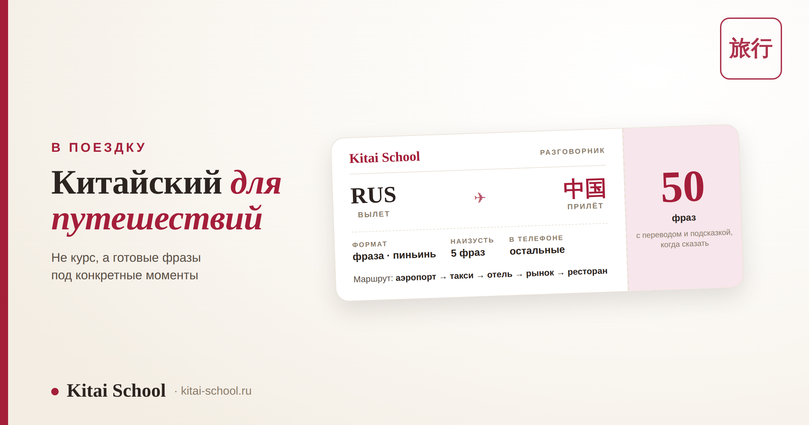
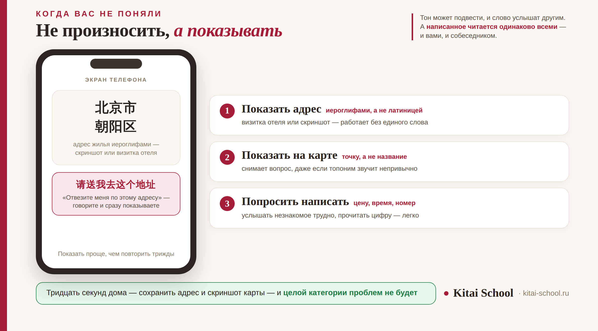

Жизнь в Китае
Китайский язык для путешествий: 50 фраз для аэропорта, такси, отеля и рынка


Учить китайский ради двухнедельной поездки не нужно. Нужны готовые фразы под конкретные моменты: паспортный контроль, такси, стойка отеля, прилавок, столик. Собрали пятьдесят таких — с пиньинем, переводом и подсказкой, когда каждую сказать. И отдельно разобрали приём, который выручает чаще любой заученной фразы.
Пятьдесят реплик по семи моментам поездки: аэропорт, такси, что делать когда вас не поняли, отель, магазин, ресторан и помощь. Главный приём туриста — не произносить, а показывать написанное: тон подводит, а иероглифы и цифры читаются одинаково всеми. Наизусть стоит выучить пять фраз, остальные держать в заметках телефона. Про еду и метро у нас есть отдельные разборы, здесь их не дублируем.
Как пользоваться набором и чего здесь нет
Чтобы не искать одно и то же дважды: часть туристических тем уже разобрана отдельно и подробнее, чем поместилось бы сюда.
| Что нужно | Где ответ |
|---|---|
| Разобраться в меню и названиях блюд | еда на китайском — шестьдесят слов и разбор ресторанных фраз |
| Проезд в метро, карты и оплата | сколько стоит метро |
| Спросить цену и поторговаться | дорого ли в Китае |
| Что положить в чемодан и первые слова | что взять с собой в Китай |
| Объясниться в аптеке | аптечка в поездку |
| Что произнести в конкретный момент поездки | эта статья |
И практическое правило. Не пытайтесь запомнить все пятьдесят. Наизусть нужны пять — они перечислены в конце. Остальные скопируйте в заметки телефона: в нужный момент вы всё равно будете смотреть в экран, и это нормально.
Аэропорт и первые часы
Здесь всё предсказуемо: вопросов на контроле немного, и они повторяются из года в год.
| № | Фраза | Пиньинь | Перевод | Когда говорят |
|---|---|---|---|---|
| 1 | 我是来旅游的 | wǒ shì lái lǚyóu de | Я приехал как турист | на паспортном контроле, если спросят цель |
| 2 | 我住在酒店 | wǒ zhù zài jiǔdiàn | Я остановлюсь в отеле | второй частый вопрос на контроле |
| 3 | 请问，取行李在哪边 | qǐngwèn, qǔ xíngli zài nǎ biān | Где выдача багажа? | указатели есть, но не везде продублированы |
| 4 | 我在这儿转机 | wǒ zài zhèr zhuǎnjī | У меня здесь пересадка | сразу объясняет, почему вы не выходите в город |
| 5 | 请问洗手间在哪儿 | qǐngwèn xǐshǒujiān zài nǎr | Где туалет? | самая нужная фраза первых часов |
| 6 | 哪里可以换钱 | nǎlǐ kěyǐ huànqián | Где можно обменять деньги? | в аэропорту курс хуже, но обменять стоит немного |
| 7 | 出租车在哪儿 | chūzūchē zài nǎr | Где стоянка такси? | у выхода бывает несколько, официальная не первая |
| 8 | 我要去市区 | wǒ yào qù shìqū | Мне нужно в центр города | короткий ответ, который понимают все |
Про такси у выхода стоит знать заранее: официальная стоянка обычно дальше, а первыми подходят частники. Просить счётчик — нормально и никого не обижает.
Такси и дорога
Самый частый провал поездки. Название улицы, произнесённое с неверным тоном, водитель просто не распознаёт — поэтому адрес не произносят, а показывают.
| № | Фраза | Пиньинь | Перевод | Когда говорят |
|---|---|---|---|---|
| 9 | 请送我去这个地址 | qǐng sòng wǒ qù zhège dìzhǐ | Отвезите меня по этому адресу | говорите и сразу показываете адрес на экране |
| 10 | 请打表 | qǐng dǎbiǎo | Включите счётчик, пожалуйста | снимает разговор о цене до поездки |
| 11 | 大概多长时间 | dàgài duō cháng shíjiān | Примерно сколько ехать? | полезно знать до, а не после |
| 12 | 前面路口左转 | qiánmiàn lùkǒu zuǒ zhuǎn | На перекрёстке налево | «направо» — 右转 yòu zhuǎn |
| 13 | 请在这儿停 | qǐng zài zhèr tíng | Остановите здесь | работает лучше, чем показывать пальцем |
| 14 | 请慢一点儿开 | qǐng màn yìdiǎnr kāi | Помедленнее, пожалуйста | вежливая просьба, не претензия |
| 15 | 我赶时间 | wǒ gǎn shíjiān | Я тороплюсь | объясняет спешку без объяснений |
| 16 | 麻烦开一下后备箱 | máfan kāi yíxià hòubèixiāng | Откройте, пожалуйста, багажник | с чемоданом пригодится дважды |
Возьмите на стойке отеля визитку с адресом иероглифами или сохраните адрес скриншотом заранее — это надёжнее любого произношения. Числа при этом полезно узнавать на слух: их называют постоянно, и разбор есть в статье про цифры от 0 до 10.
Когда вас не поняли: главный приём поездки
Он простой и почти безотказный: перейти от звука к тексту. Ваше произношение может подвести, а написанное читается одинаково всеми.

| № | Фраза | Пиньинь | Перевод | Когда говорят |
|---|---|---|---|---|
| 17 | 我不会说中文 | wǒ bú huì shuō zhōngwén | Я не говорю по-китайски | снимает половину неловкости сразу |
| 18 | 我听不懂 | wǒ tīng bù dǒng | Я не понимаю | честнее, чем кивать |
| 19 | 请写在这儿 | qǐng xiě zài zhèr | Напишите здесь, пожалуйста | главная фраза туриста, о ней ниже отдельно |
| 20 | 请在地图上指给我看 | qǐng zài dìtú shàng zhǐ gěi wǒ kàn | Покажите на карте | работает даже при полном языковом тупике |
| 21 | 您会说英语吗 | nín huì shuō Yīngyǔ ma | Вы говорите по-английски? | в крупных городах шанс есть, в мелких почти нет |
| 22 | 我用手机翻译一下 | wǒ yòng shǒujī fānyì yíxià | Я переведу в телефоне | предупреждает, что вы не игнорируете, а разбираетесь |
Обратная сторона приёма работает не хуже: просите написать ответ вам. Цену, время, номер платформы, название остановки. Услышать незнакомое слово трудно, прочитать цифру — легко. Почему звук подводит именно в китайском и что с этим делать дома, до поездки, — в разборе про корректировка произношения.
Моя студентка перед первой поездкой выучила три десятка фраз и очень ими гордилась. В первый же вечер она села в такси, назвала адрес — и водитель не понял. Она повторила громче, потом по слогам, потом расстроилась и вышла.
Дело было не в словах: улицу она произнесла верно по звукам, но с ровным тоном вместо нужного, и для водителя это оказалось другое слово. Утром на стойке ей дали карточку отеля с адресом иероглифами, и больше проблем с такси не было ни разу.
С тех пор я советую всем перед поездкой сделать одну скучную вещь: сохранить в телефоне адрес жилья иероглифами и скриншот карты. Тридцать секунд дома — и целая категория проблем просто не возникает.
Отель: заселение и мелкие просьбы
На стойке от вас ждут двух вещей: брони и документа. Всё остальное — просьбы, которые формулируются одинаково.
| № | Фраза | Пиньинь | Перевод | Когда говорят |
|---|---|---|---|---|
| 23 | 我有预订 | wǒ yǒu yùdìng | У меня есть бронь | первое, что говорят на стойке |
| 24 | 我要办入住 | wǒ yào bàn rùzhù | Я хочу заселиться | дальше попросят документ |
| 25 | 几点退房 | jǐ diǎn tuìfáng | Во сколько выезд? | спрашивают при заселении, а не в последний день |
| 26 | 请问无线网密码是多少 | qǐngwèn wúxiànwǎng mìmǎ shì duōshao | Какой пароль от вайфая? | пароль часто не написан нигде |
| 27 | 房卡不能用了 | fángkǎ bù néng yòng le | Карта от номера не работает | частая ситуация, решается за минуту |
| 28 | 房间里没有热水 | fángjiān lǐ méiyǒu rèshuǐ | В номере нет горячей воды | конкретная жалоба решается быстрее общей |
| 29 | 可以寄存行李吗 | kěyǐ jìcún xíngli ma | Можно оставить багаж на хранение? | выручает в день выезда |
| 30 | 能帮我叫车吗 | néng bāng wǒ jiào chē ma | Вызовите машину, пожалуйста | на стойке сделают это быстрее вас |
Про время выезда спрашивайте при заселении, а не в последний день: порядок отличается от отеля к отелю. Как называть часы и минуты — в статье про время: часы и минуты.
Магазин и рынок: выбрать, спросить, отказаться
Про цену и торг у нас есть отдельный разбор, поэтому здесь всё остальное — то, что говорят до и после вопроса о цене.
| № | Фраза | Пиньинь | Перевод | Когда говорят |
|---|---|---|---|---|
| 31 | 我看看 | wǒ kànkan | Я просто посмотрю | вежливо снимает напор продавца |
| 32 | 可以试一下吗 | kěyǐ shì yíxià ma | Можно примерить? | и про одежду, и про попробовать на вкус |
| 33 | 有大一号的吗 | yǒu dà yī hào de ma | Есть на размер больше? | «меньше» — 小一号 xiǎo yī hào |
| 34 | 有别的颜色吗 | yǒu biéde yánsè ma | Есть другой цвет? | на витрине выложено не всё |
| 35 | 我要这个 | wǒ yào zhège | Вот это, пожалуйста | короче и понятнее любого описания |
| 36 | 可以刷手机吗 | kěyǐ shuā shǒujī ma | Можно оплатить телефоном? | почти везде да, но спросить стоит |
| 37 | 能开发票吗 | néng kāi fāpiào ma | Можно чек? | пригодится для возврата и для отчёта |
| 38 | 我再想想 | wǒ zài xiǎngxiang | Я ещё подумаю | вежливый отказ, после которого не уговаривают |
| 39 | 不用了，谢谢 | búyòng le, xièxie | Не нужно, спасибо | закрывает навязчивое предложение |
| 40 | 这个能带上飞机吗 | zhège néng dài shàng fēijī ma | Это можно провезти в самолёте? | спрашивают до покупки, а не на досмотре |
Отказ — отдельное умение. Резкое «нет» на рынке звучит грубее, чем кажется, поэтому отказываются мягко: 我再想想 или 不用了，谢谢. После этого обычно не уговаривают. Сколько что стоит и как торговаться — в разборе дорого ли в Китае.
Ресторан: то, чего нет в разборе про еду
Названия блюд, способы готовки и ресторанные слова разобраны отдельно, в статье про еда на китайском. Здесь только то, что говорят вокруг заказа.
| № | Фраза | Пиньинь | Перевод | Когда говорят |
|---|---|---|---|---|
| 41 | 两位 | liǎng wèi | На двоих | так называют количество гостей на входе |
| 42 | 可以坐这儿吗 | kěyǐ zuò zhèr ma | Можно сесть здесь? | в шумных местах столы делят |
| 43 | 有英文菜单吗 | yǒu Yīngwén càidān ma | Есть меню на английском? | в туристических местах часто есть |
| 44 | 您推荐什么 | nín tuījiàn shénme | Что посоветуете? | лучший способ попробовать местное |
| 45 | 这个辣吗 | zhège là ma | Это острое? | острота в регионах разная, вопрос не лишний |
| 46 | 我对花生过敏 | wǒ duì huāshēng guòmǐn | У меня аллергия на арахис | подставьте свой продукт: это шаблон |
Фраза про аллергию — шаблон: вместо арахиса подставляется любой продукт, а конструкция остаётся. Это тот случай, когда лучше показать написанным и убедиться, что вас поняли. Как устроен стол и кто платит — в статье про китайский этикет общения.
Если потерялись или нужна помощь
Четыре фразы, которые надеешься не сказать. Именно поэтому их учат наизусть: искать в заметках будет некогда.
| № | Фраза | Пиньинь | Перевод | Когда говорят |
|---|---|---|---|---|
| 47 | 我迷路了 | wǒ mílù le | Я заблудился | прохожие реагируют доброжелательно |
| 48 | 请帮帮我 | qǐng bāng bang wǒ | Помогите, пожалуйста | универсальная просьба о помощи |
| 49 | 我的手机丢了 | wǒ de shǒujī diū le | Я потерял телефон | подставляется любая вещь |
| 50 | 请叫救护车 | qǐng jiào jiùhùchē | Вызовите скорую | фраза, которую хочется никогда не сказать |
И короткий список того, что стоит знать наизусть, а не в телефоне: «я не говорю по-китайски», «напишите здесь», «сколько стоит», «где туалет» и «помогите, пожалуйста». Пять фраз закрывают большинство ситуаций, где нужно среагировать сразу.
Частые вопросы (FAQ)
Сколько фраз нужно знать туристу в Китае?
Меньше, чем кажется. Поездка держится на нескольких десятках повторяющихся ситуаций: пройти контроль, сесть в такси, заселиться, купить, заказать, спросить дорогу. Набор из этой статьи закрывает их целиком. Важнее не число фраз, а то, чтобы нужная нашлась быстро: держите список в заметках телефона, а не в памяти.
Что делать, если меня не понимают?
Переходите от звука к тексту. Скажите, что не говорите по-китайски, и покажите нужное на экране: адрес иероглифами, точку на карте, фото места. Попросите собеседника написать ответ — цифры и иероглифы читаются одинаково всеми, а произношение подводит. Этот приём выручает чаще любой заученной фразы, потому что не зависит от вашего акцента.
Нужно ли учить тоны ради поездки?
Хотя бы на слух — да. Тон в китайском меняет смысл слова, и без него даже правильно выученная фраза может прозвучать неузнаваемо. Но для поездки не нужно ставить произношение целиком: достаточно послушать нужные фразы в записи и повторить их вслух несколько раз. Всё, что не получилось произнести, показывайте написанным.
Можно ли обойтись одним переводчиком в телефоне?
Частично. Переводчик хорошо справляется с текстом и вывесками, но плохо — с живым разговором: пока вы печатаете, собеседник уходит. Разумный вариант — несколько фраз наизусть для быстрых ситуаций и телефон для всего остального. И заранее скачайте офлайн-словарь: связь есть не везде, а роуминг работает не всегда.
Как объяснить таксисту, куда ехать?
Не на слух, а показом. Название улицы, произнесённое с неверным тоном, часто не распознаётся, поэтому адрес показывают на экране иероглифами: возьмите визитку отеля или сохраните адрес скриншотом заранее. Вслух говорите короткую фразу «отвезите меня по этому адресу» и сразу показывайте текст. Отдельно попросите включить счётчик.
Какие фразы точно стоит выучить наизусть?
Пять: «я не говорю по-китайски», «напишите здесь», «сколько стоит», «где туалет» и «помогите, пожалуйста». Они закрывают большинство ситуаций, в которых нужно среагировать мгновенно и некогда листать список. Остальное спокойно живёт в заметках телефона.
Если поездка не разовая и хочется понимать ответы, а не только задавать вопросы, приходите на бесплатное пробное занятие. Поставим звук на нужных фразах, чтобы вас понимали с первого раза, и соберём набор под ваш маршрут.
Или напишите слово ПОЕЗДКА нашему менеджеру в Telegram — подскажем, что успеть выучить до вылета.
Дальше по теме: меню и названия блюд — еда на китайском; цены и торг — дорого ли в Китае; проезд — сколько стоит метро; сборы — что взять с собой в Китай и аптечка в поездку; числа — цифры от 0 до 10; время — время: часы и минуты; поведение за столом — китайский этикет общения; с чего начать язык — изучение китайского с нуля; занятия — индивидуальные уроки.
Источники
- Практика Kitai School — подготовка студентов к поездкам в Китай и разбор ситуаций, с которыми они возвращаются.
- Учебные материалы разговорного китайского, привязанные к уровням HSK.
- Наблюдения преподавателей школы в поездках по Китаю.
Лёгкой дороги — и пусть вас понимают с первого раза! 一路平安！